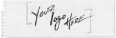
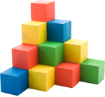
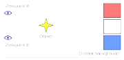

{kind=link}

A microsite is an individual web page or a small cluster of pages which are meant to function as a discrete entity within an existing website or to complement an offline activity. The microsite's main landing page can have its own domain name or subdomain.
The best way to have a website with abilities to be viewed in every computer, tablet and mobile.

It is a collection of Page and Component Templates to be used by web designers and developers.

The last web trend! It makes a beautiful visual effect that brings a second life to every slide.
The Sydney Harbour Bridge is a steel through arch bridge across Sydney Harbour that carries rail, vehicular, bicycle and pedestrian traffic between the Sydney central business district (CBD) and the North Shore. The dramatic view of the bridge, the harbour, and the nearby Sydney Opera House is an iconic image of Sydney, New South Wales, and Australia. The bridge is nicknamed "The Coathanger" because of its arch-based design.
Under the directions of Dr J.J.C. Bradfield of the NSW Department of Public Works, the bridge was designed and built by British firm Dorman Long and Co Ltd of Middlesbrough and opened in 1932. The bridge's design was influenced by the Hell Gate Bridge in New York. It is also the sixth longest spanning-arch bridge in the world, and it is the tallest steel arch bridge, measuring 134 metres (440 ft) from top to water level. It was also the world's widest long-span bridge, at 48.8 meters (160 feet) wide, until construction of the new Port Mann Bridge in Vancouver.
You won't have a parallax effect, but it presents a nice change.
Based on Cool Kitten, made by Jalxob.